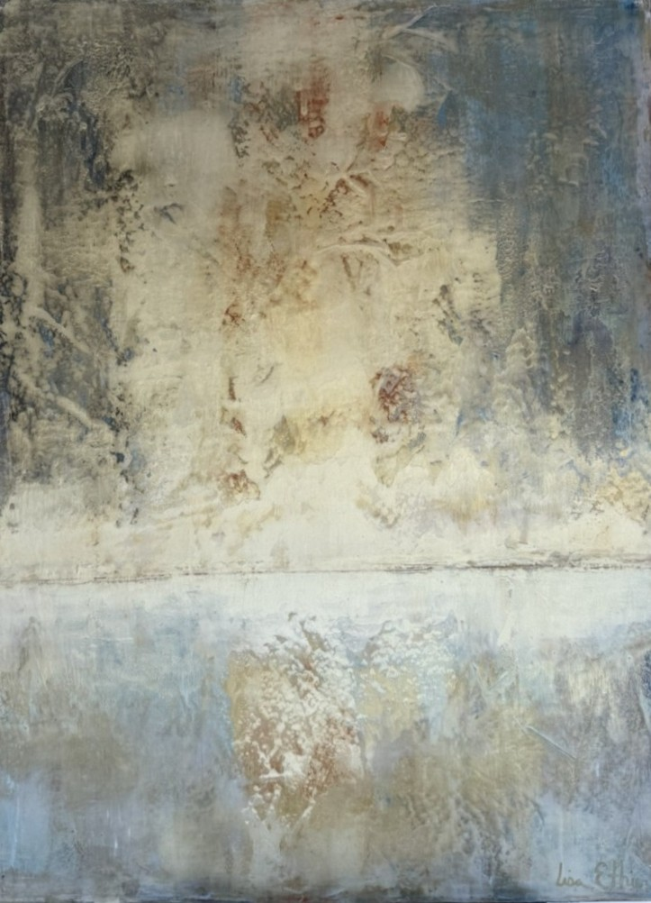
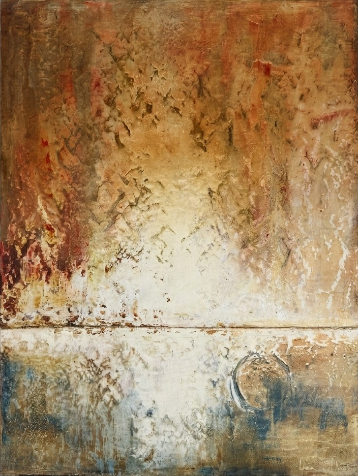

AMBLESIDE ARTIST
Lisa Ethier
Oil · Cold Wax · Mixed Media

FEATURED WORK
Solara
Lisa Ethier
Oil & Cold Wax on Board
40 × 30 in.
A luminous field of layered texture, atmosphere and memory.
THE ARTIST
From thought
into intuition.
Lisa Ethier began her painting practice in 2020, during a period when the outside world abruptly slowed and narrowed.
Coming to painting without formal artistic training and with a Ph.D. in business psychology, Ethier describes her practice as a movement away from a cerebral, outward focus and toward a more intuitive way of working rooted in inner awareness.
That transition is central to the character of her work. Rather than beginning with a fixed image or predetermined result, Ethier allows material, memory and sensation to guide the painting as it develops.
Her work is created primarily with oil and cold wax, often incorporating collage and found materials to build surfaces that feel accumulated, excavated and emotionally charged.
ARTIST'S INTENTION
“At its core, my work centers on one intention: to evoke feeling.”
— Lisa Ethier
THE PROCESS
What is
revealed.
What remains.
Working with oil and cold wax gives Ethier the freedom to become absorbed in the physical qualities of the materials.
She builds luminous, textured surfaces in layers, allowing traces of previous decisions to remain visible even as other passages are obscured or transformed.
Collage sometimes enters these surfaces, adding another layer of history and interruption. The paintings become records of accumulation: what has been added, erased, covered and rediscovered.
The result is less a fixed narrative than an invitation — a space in which viewers can sense tension, history, depth and mystery without being told precisely what to see.
SELECTED WORKS
The Collection

Etherea
Lisa Ethier
Cold Wax + Oil on Board
40 × 30 in.
$3,450
01 / 03
INFLUENCES
Inner & Outer Worlds
Buddhist thought informs Ethier's interest in awareness, interiority and the subtle movement between presence, concealment and change.
Landscape provides a visual and emotional source, offering structures of depth, atmosphere, erosion and transformation.
Ethier is drawn to the interplay between strength and subtlety found in both mythic imagery and ordinary life.
The courage and resilience of women who came before her inform the goddess forms that appear within her practice.
MATERIAL
History Embedded
Found materials are incorporated into Ethier's compositions as physical traces of histories already lived.
Scrap metal often settles into the work as an anchor — raw, weathered and carrying evidence of a previous life.
These objects join layers of paint, wax and collage, creating surfaces that hold both inherited histories and newly created ones.
GODDESS FORMS
Strength
held with
subtlety.
The power of women who came before Ethier is one of the recurring emotional sources within her work.
Her goddess forms honor courage and resilience without reducing those ideas to simple symbols. They emerge through the same layered language as the rest of her practice: partly revealed, partly concealed and embedded within textured surfaces.
In these works, strength is not presented only as force. It can also appear as endurance, quietness, complexity and the capacity to carry history forward.
COLLECT